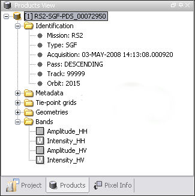
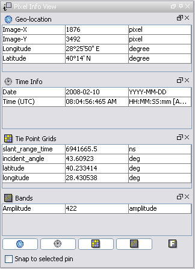

All products when opened are added to the Products View's
open product list. The product list is a tree view with up to five root nodes for each open product:
You can quickly open an image view
for a band or tie-point grid by double-clicking on an item of the
expanded product root nodes. A Metadata View is opened if you click on
a metadata node.

The information concerning each pixel can be analysed interactively in the
pixel information view.
The Pixel View displays
pixel information while you move the mouse over the band image
view.

You can un-dock each section within the Pixel View using the floating-button (),
and dock it back by using the docking-button ( ) in the header
bar.
) in the header
bar.
The information displayed belongs to the current image pixel beneath the mouse pointer:
If a pin is selected in the current image view, you can select Snap to selected pin
in order to "freeze" the pixel information to the position of the currently selected pin.
Note: Flag values are only displayed if a corresponding flag dataset has been loaded.
Use the right mouse button over a flag dataset in the product view in order to load a flag dataset's sample
values.
Note: In the preferences dialog you can deselect the
option that only pixel values of displayed or loaded bands are shown.